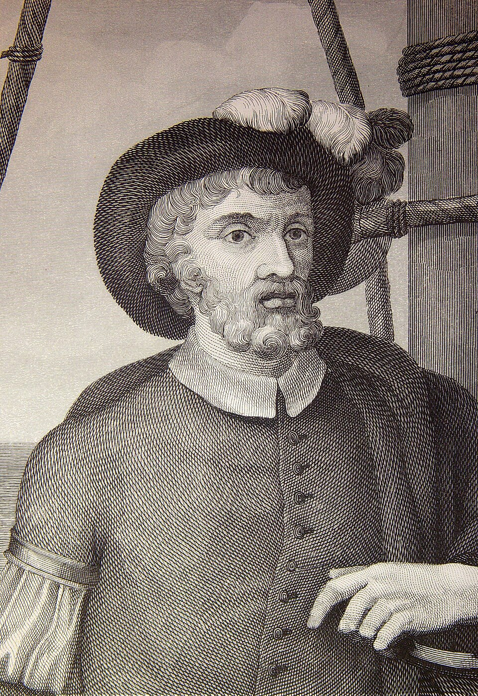

La nao Victoria vuelve por el oriente habiendo partido por el poniente: la Tierra ha sido rodeada
Tres años después de zarpar con cinco naves y doscientos cuarenta hombres, la expedición de la Especiería regresa reducida a un solo barco y dieciocho sobrevivientes al mando de Juan Sebastián de Elcano. La Tierra es redonda: lo prueban dieciocho moribundos y un día perdido.

Una nave que hace agua por todas sus costuras, con las velas podridas y dieciocho hombres que parecen salidos de la sepultura, cruzó hoy sábado la barra de Sanlúcar. Es la nao Victoria, única superviviente de la armada que partió de este mismo puerto hace tres años menos dos semanas en busca de las islas de la Especiería por el camino del poniente. La manda Juan Sebastián de Elcano, marino de Guetaria, y trae las bodegas cargadas de clavo de olor, que casi paga por sí solo la expedición entera. Los dieciocho, flacos y descalzos, han prometido ir en procesión con un cirio en la mano a dar gracias, que lo suyo, más que viaje, ha sido resurrección.
La empresa fue del portugués Hernando de Magallanes, que ofreció al rey don Carlos alcanzar las islas del clavo y la nuez moscada sin tocar la demarcación de Portugal, navegando siempre hacia donde el sol se pone. Cinco naves salieron de Sanlúcar en septiembre de 1519. Tras invernar entre motines y horcas en la costa patagónica, halló Magallanes el estrecho que buscaba en lo más austral de las Indias, un laberinto de canales entre montañas nevadas, y desembocó en un mar tan sereno que lo llamó Pacífico. Fue engaño de la fortuna: lo cruzaron en tres meses y veinte días sin hallar tierra de provecho, y aquel mar resultó más ancho que todos los mares juntos.
Lo que costó se cuenta pronto y no se olvida nunca: se comió el bizcocho deshecho en polvo y hervido de gusanos, se comieron los cueros de las vergas ablandados en agua de mar, y las ratas se vendían a bordo a medio ducado la pieza, y no había para todos, según lo fue anotando en su cuaderno un pasajero de Vicenza, Antonio Pigafetta, cronista de todo el viaje. Magallanes no vive para su gloria: murió en abril del año pasado en la isla de Mactán, metido en una refriega contra un régulo isleño, y otros capitanes cayeron a traición en un banquete. De cinco naves, una se perdió, otra desertó y regresó, otra quedó sin poder navegar en las Molucas, y la quinta hubo de quemarse por falta de gente.
El regreso de Elcano fue una fuga de medio mundo: cargado el clavo en Tidore, tomó por el mar de los portugueses, dobló el cabo de Buena Esperanza tras semanas de tormenta y no osó tocar puerto enemigo, hasta que el hambre lo forzó a las islas de Cabo Verde, donde perdió trece hombres, apresados. Allí sucedió el prodigio que dará que hablar a cosmógrafos y teólogos: preguntado el día, respondieron los de tierra que era jueves, cuando en los libros de a bordo, llevados sin falta ni descuido una sola jornada, era miércoles. Navegando siempre tras el sol, la nave ha perdido un día entero sin perderlo: lo ha ido dejando, hora a hora, repartido por el camino.
Treinta años ha que este diario dio cuenta de unas tierras halladas al otro lado del mar Océano; hoy le toca escribir algo mayor: que el mundo entero ha sido rodeado por una nave, y que es uno solo, redondo y sin borde, con todos sus mares comunicados. El emperador ha mandado llamar a Elcano, y se dice que le concederá por armas un globo del mundo con un mote latino: el primero que me rodeaste. Quede para los años venideros medir esta jornada; por lo pronto, dieciocho hombres han pagado con tres años de infierno la certeza de que se puede salir de casa por el poniente y volver a ella por el oriente.